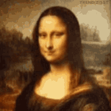

LEONARDO DA VINCI: UN GENIE VISIONNAIRE
Léonardo da Vinci (1452-1519) est un artiste de la Renaissance et philosophe italien né à Vinci , véritable polymathe il excelle dans plusieurs domaines. Peintre,dessinateur,sculpteur,architecte mais aussi inventeur ,son génie sans limite le pousse toujours plus loin. Il s'adonne aussi à l'anatomie, la mécanique,la science, la botanique,le vol des avions et les machines de guerre inspirant ainsi Copernic et Galilé sur la gravitation. De part son avancé sur son temps et ses découvertes révolutionaires Da vinci a révolutionné le monde d'hier,d'aujourd'hui et de demain.
Informations
- Homme de Vitruve
- La Dame à l'hermine 1489
- La Vierge aux rochers
- Saint Jean-Baptiste
- La Cène
- Madonna Benois
- La Joconde
Liens pour en savoir toujours plus sur notre idole avec des accés à de la documentation: Les carnets de De Vinci Le Clos Lucé Les derniers secrets de la Joconde

L'ensemble de ses oeuvres incarne un travail tellement magistral et novateur, qu'à ce jour encore on cherche à résoudre le mystére Da Vinci. Le livre DaVinci Code(2003) illustre bien l'engouement et les mystéres concernant cet artiste car en effet De Vinci nous parle. Si l'on regarde bien alors mille et un détails aparaissent;des paysages,des allusions historiques,des gestes milimétrés par ses personnages ou alors un regard captivant comme celui de la Joconde.
Le "Codex Atlanticus" avec ses 1119 pages est la plus grande collection rassemblant les notes et dessins de Léonard de Vinci, écrit ente 1478 et 1519 il a été rassemblé par le sculpteur milanais Pompeo Leoni à la fin du XVIeme siécle. Composé de deux volumes, il représente une véritable richesse avant-gardiste de connaissances, ses recherches aux thématiques variées sont le parfait reflet d'un esprit aux idées et inventions audacieuses et futuristes.
La Techique du Sfumato
Mise au point par Léonard de vinci elle se décrit comme "sans lignes ni contours, à la façon de la fumée ou au-delà du plan focal". Elle donne un effet vaporeux obtenu par la superposition de plusieurs couches de peinture extrêment délicates, qui donne au sujet des contours imprécis.